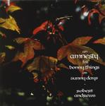

| Artist: | Robert Andrews |
| Title: | An Amnesty For Bonny Things On Sunny Days |
| Label: | Cyclops CYCL 083 |
| Length(s): | 56 minutes |
| Year(s) of release: | 1999 |
| Month of review: | 01/2000 |
| 1) | Autumn | 9.24 |
| 2) | Earth And Stone | 9.46 |
| 3) | Indian Summer | 2.03 |
| 4) | Amnesty | 8.46 |
| 5) | Landfall | 11.34 |
| 6) | Sunlight On Leaves | 4.57 |
| 7) | ?? | 9.59 |